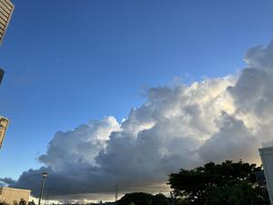

うるがいの話 ある日
最新: 隣人が来る【うるがいの話 ある日】とは 一日だけのプログです
『うるがいの話』の最新一日だけのプログで、通信料が少なく経済的だ。カニの画像をクリックすると全ての日付が載る『うるがいの話』サイトを表示します
|
|
【うるがいの話】 うるがい(ｳﾙｶﾞｲ urugai)とは、『もずくがに』の名前でとても大きくなります。 |
|---|---|
|
|
【カミマヤーの話】 猫のことを方言でマヤーといいます。カミマヤー（kamimayaa）とは、神の猫のことです。 |
|
【たながぁの音楽】 たながぁ（ﾀﾅｶﾞｰ tanagaa）とは手長えびのことで、何種類かあり大きいのは車 エビぐらいになります。 |

|
【ぶながぁの話】 ぶながぁ(ﾌﾞﾅｶﾞｰ bunagaa)とは、赤い髪の毛、赤い身体、そして身長は１ｍ２０ｃｍ ぐらい、川の蟹を食べているの目撃された。場所は沖縄県国頭郡大宜味村のと ある村僕の隣近所に住んでいる爺さんから、聞いた話です。 |
|
|
【ギーマの話】 ギーマ(giima)とは、山原の里山に咲くスズランに似た、 花を付けます。実は食べられます、 気が付くと口の周りが紫になっています。 |
2023年09月21日 (木）隣人が来る
15:59

昨日の夕方、ウォーキングから帰り庭に水を撒いていると隣の奥さんが、やっ
て来た。もう５年以上もまともに会話したことがない。ウツになっているとの
うわさもあったが、顔みるかぎり健康そのものである。足場組立が無事終わり
、ありがとうございましたと言う。あの台風の時、一階の天井から水は落ちて
きたので旦那さんと大騒ぎ、天井の板を外したらしい。雨漏りの原因は、なか
なか分からなかったが、どうやら２階の明かり窓に何やら外から物が、ぶつか
って窓が壊れそこから雨水が、侵入してきたとのこと。私と同じく、損保ジャ
パンに４回ほど電話をかけ、かつ損保ジャパンから派遣されてきた調査員も尋
ねて来たらしいが、外部からの原因が判明しないので保険適用外となったとの
こと。業者と雨漏り対策のほかに、外壁の塗装を別にするかと検討したが、も
う歳なのでお金はかかるが今回やる事にしたと。長らく、会話をしていないの
でついでに近況を確認すると、奥さんはコロナの真っ盛りのとき、ピアノのふ
ちに手を置いたところ、コケて右腕を骨折した。直るのに一年以上かかったら
しい・・。オー大変でしたねと、そのあと延々と３０分ほど話こむ。帰る時に
『困った時はお互いお隣さん同士助け合いましょうね』と言って帰った。
今日は、ブルーのシートが車に覆われていた。外壁の洗浄とのこと、私の机の
右の窓は、しばらくは開かずの窓がつづくのか。そとは、激しい雨が降ってい
る。
１５時４９分 ビットコインの総資産 ￥１１、６４２（↑４０）